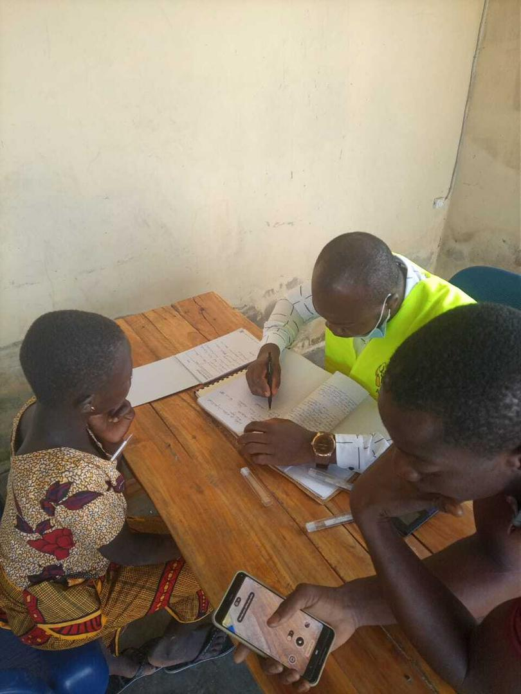
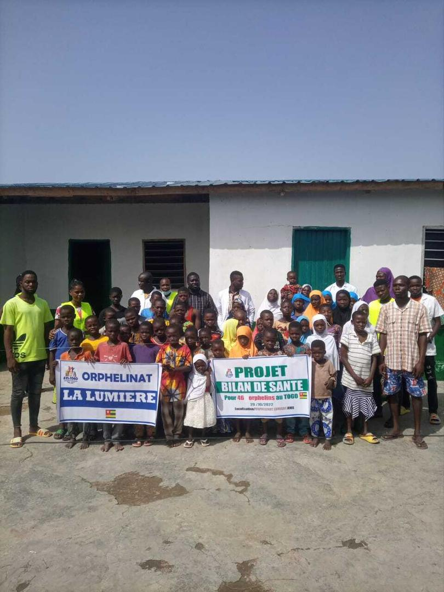
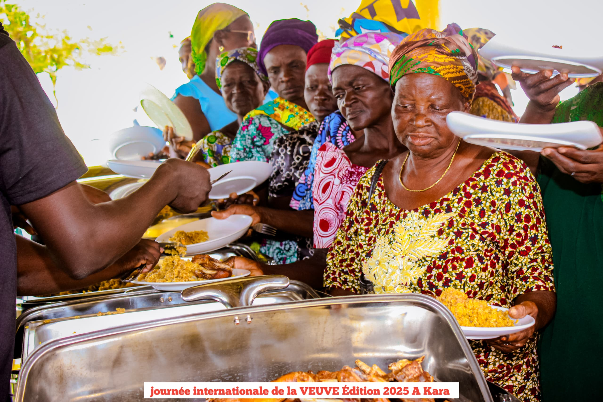
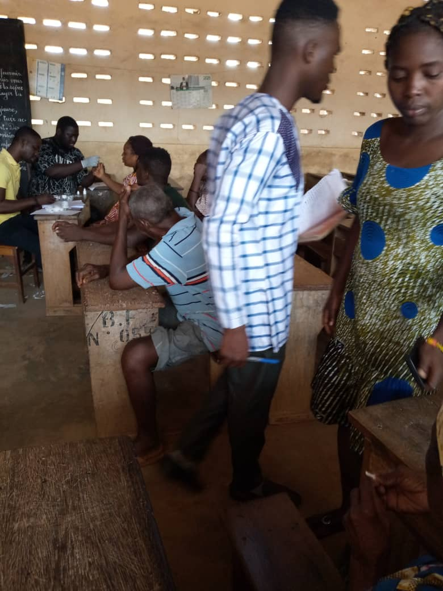

Nos Programmes
L'APP intervient dans six domaines clés pour répondre aux défis de développement des communautés togolaises.

Santé Communautaire
Campagnes de bilans de santé, sensibilisation au VIH/SIDA et aux maladies chroniques. Nos équipes de terrain portant les vestes APP se déploient dans les communautés rurales et urbaines.

Enfants & Orphelins
Actions humanitaires en faveur des orphelins via notre programme "La Lumière" en partenariat avec l'Association AVI Togo, qui gère 4 orphelinats et un centre de santé.
Campagnes de Sensibilisation
Mobilisation communautaire sur les grandes questions de santé publique, de droits des enfants et de planning familial. L'édition du 08 mai 2025 a réuni plus de 40 participants.

Femmes & Veuves
Célébration annuelle de la Journée Internationale de la Veuve — Édition 2025 à Kara — offrant soutien moral, repas communautaire et plaidoyer pour les droits des femmes veuves.

Formation & Éducation
Programme AFEDI (Appui Formatif en Éducation pour le Développement Intégral) : formations des femmes, des jeunes et des éducateurs pour renforcer les capacités locales.

Agriculture & Paysans
Aide aux paysans en période de soudure alimentaire. Formation en biométhanisation pour une agriculture durable, et soutien au Comité pour le Développement Intégral de Sara (CODISA).